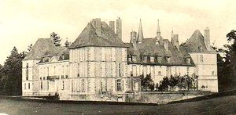
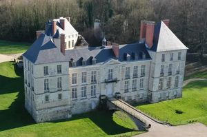
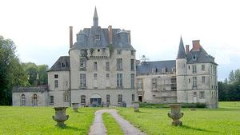
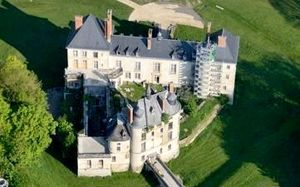
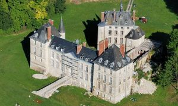
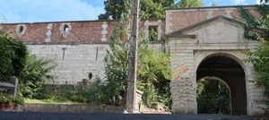

Recensement Jean-Claude Truffet
| Département | 08 — Ardennes |
| Canton | Rethel |
| Commune | Thugny-Trugny |
| Type d'édifice | Château |
| Période d'origine | XVI |
| Coordonnées GPS | 49° 29' 07" Nord, 4° 25' 14" Est Cité Mazarin grav 6 GPS : 49° 30' 32,4" Nord, 4° 22' 8,51" Est |






Deux châteaux dans cet article Thugny, cité Mazarin. THUGNY-TRUGNY, du XVIe siècle est attribuée à Jean-Jacques de Suzanne, comte de Cerny-en-Laonnois. sa fille épouse Charles de Moÿ. Sa petite-fille, Claude de Moÿ, née en ce château, est une riche héritière qui épouse en 1585 Henri de Lorraine-Chaligny, prince du Saint-Empire Germanique. Ce dernier meurt assez jeune en 1601 suivit de sa veuve en 1627. Au début de l'an 1653, le maréchal Turenne reçoit le cardinal Mazarin en cet endroit. En 1721, Procope Hyacinthe de Ligne, héritier des marquis de Moÿ et des Lorraine Chaligny, ancien brigadier des armées du Roi, menant une vie désordonnée, vend le château à Antoine Crozat un financier du XVIIIe siècle. Son propriétaire, M. Jacques de Causans, le restaure depuis 3 ans. Propriété d'Aynard, marquis de Chabrillan, décédé en 1950, puis de son petit-fils, le comte Robert Henri de Caumont La Force, décédé en 2005, il a bénéficié, depuis 2007, d'une importante campagne de restauration, afin d'être aménagé pour l'organisation de réception. Il sert en effet de cadre à des manifestations diverses, qui permettent au propriétaire, Jacques de Causans, de continuer à financer les travaux de rénovation du bien transmis au sein de sa famille. Éléments protégés MH . A Rethel château de la CITE MAZARIN, appelé aussi la Porte du château Rethel est un ancien château bâti à Rethel, Il ne reste que quelques vestiges, dont la porte d'entrée du château de la Cité Mazarin, le porche et une partie de sa façade extérieure existent encore. Il appartient depuis à un particulier. La porte est visible de l'extérieur.
THUGNY-TRUGNY date du XVIe siècle. Suite aux dommages subis pendant la première guerre mondiale, il fut reconstruit sur la base des anciens plans en ne rebâtissant qu'une partie des pavillons. En arrivant par la rue du château se dresse le châtelet avec son allure fortifiée. Le château est bâti en gaize, renforcée de pierres plus dures aux encadrements et dans les chaînes en besace. Une terrasse bordée de balustrade a été créée, au-dessus de voûtes, vestiges d'un ancien bâtiment endommagé en 1918. Sur le coté, caché dans des arbres, s'élève une grange seigneuriale, avec, à chaque coin, des tourelles coiffées de poivrière, tout en utilsant les techniques de construction des années 1920. C'est un bâtiment de forme oblongue, qui comporte une ligne de mâchicoulis, protégeant l'entrée, et une arcade de passage charretier, qui s'ouvre sur un passage voûté. Derrière le châtelet, se trouve un bâtiment de style classique, avec une façade sur deux niveaux en regard du canal. Il est composé de deux grands pavillons d'angle saillants, d'importances inégales et sur trois niveaux. Le plus grand de ces pavillons d'angle compte trois travées, renforcée de pierres plus dures aux encadrements et dans les chaînes en besace. Une terrasse bordée de balustrade a été créée, au-dessus de voûtes, vestiges d'un ancien bâtiment endommagé en 1918.. Son propriétaire est Mr Jacques de Causans qui le fait restaurer depuis 3 ans. C'est une propriété privée. Le château est classé aux M.H depuis 1946.
Henri de Lorraine-Chaligny"
Deux châteaux dans cet article Thugny cité Mazarin Thugny GPS : 49° 29' 07" Nord, 4° 25' 14" Est Cité Mazarin grav 6 GPS : 49° 30' 32,4" Nord, 4° 22' 8,51" Est